Reading Comprehension Worksheets
Informational text as a cloze passage with word bank, a QR-code listening task with free audio, and a word search – 5 pages with answer keys.
3,432 resources
Subject
Grade
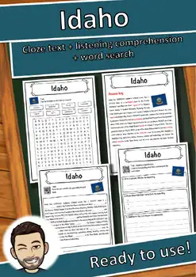
Idaho – Geography worksheet: cloze text, listening comprehension and word search

Attrezzo – Italian Reading: Cloze Text, Listening Task & Word Search (Scheda)
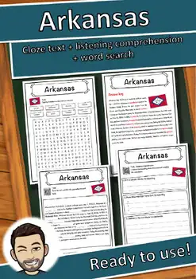
Arkansas – Worksheet: cloze text, listening comprehension and word search

Attore – Italian Reading: Cloze Text, Listening Task & Word Search (Scheda)

Asse terrestre – Italian Reading: Cloze, Listening & Word Search

Artemide – Italian Reading: Cloze Text, Listening Task & Word Search (Scheda)

Argine – Italian Reading: Cloze Text, Listening Task & Word Search (Scheda)

Argento – Italian Reading: Cloze Text, Listening Task & Word Search (Scheda)

Architettura – Italian Reading: Cloze, Listening & Word Search

Apprendimento – Italian Reading: Cloze, Listening & Word Search

Apostolo – Italian Reading: Cloze Text, Listening Task & Word Search (Scheda)

Antenna – Italian Reading: Cloze Text, Listening Task & Word Search (Scheda)

Anno – Italian Reading: Cloze Text, Listening Task & Word Search (Scheda)

Anima – Italian Reading: Cloze Text, Listening Task & Word Search (Scheda)

Anatinae – Italian Reading: Cloze Text, Listening Task & Word Search (Scheda)

Amicizia – Italian Reading: Cloze Text, Listening Task & Word Search (Scheda)

Alta Austria – Italian Reading: Cloze, Listening & Word Search

Alpi sveve – Italian Reading: Cloze Text, Listening Task & Word Search (Scheda)
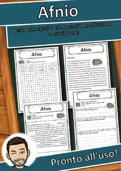
Afnio – Italian Reading: Cloze Text, Listening Task & Word Search (Scheda)
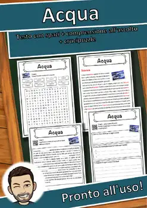
Acqua – Italian Reading: Cloze Text, Listening Task & Word Search (Scheda)
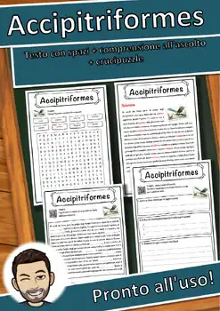
Accipitriformes – Italian Reading: Cloze, Listening & Word Search
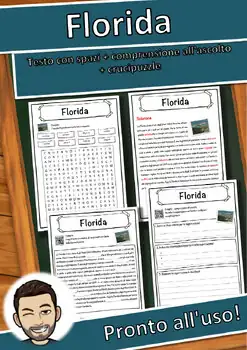
Florida – Italian Reading: Cloze Text, Listening Task & Word Search (Scheda)
Florence Nightingale – Italian Reading: Cloze, Listening & Word Search
Flauto traverso – Italian Reading: Cloze, Listening & Word Search
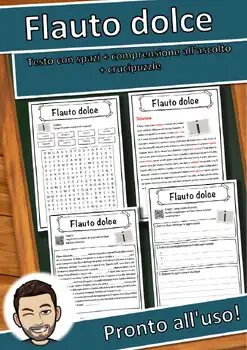
Flauto dolce – Italian Reading: Cloze, Listening & Word Search
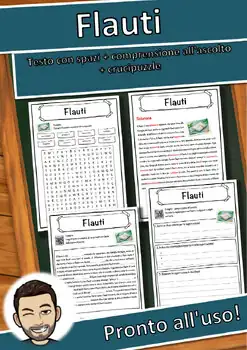
Flauti – Italian Reading: Cloze Text, Listening Task & Word Search (Scheda)
Fiume Azzurro – Italian Reading: Cloze, Listening & Word Search
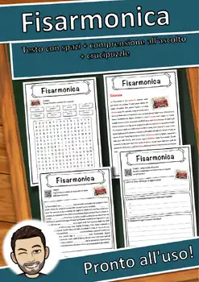
Fisarmonica – Italian Reading: Cloze Text, Listening Task & Word Search (Scheda)
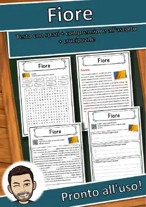
Fiore – Italian Reading: Cloze Text, Listening Task & Word Search (Scheda)
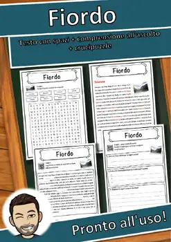
Fiordo – Italian Reading: Cloze Text, Listening Task & Word Search (Scheda)

File – Italian Reading: Cloze Text, Listening Task & Word Search (Scheda)

Figurina – Italian Reading: Cloze Text, Listening Task & Word Search (Scheda)

Figi – Italian Reading: Cloze Text, Listening Task & Word Search (Scheda)

Fienile – Italian Reading: Cloze Text, Listening Task & Word Search (Scheda)

Fidel Castro – Italian Reading: Cloze, Listening & Word Search

Fiaba – Italian Reading: Cloze Text, Listening Task & Word Search (Scheda)

Fertilizzante – Italian Reading: Cloze, Listening & Word Search

Ferrovia Transiberiana – Italian Reading: Cloze, Listening & Word Search
Ferrovia – Italian Reading: Cloze Text, Listening Task & Word Search (Scheda)
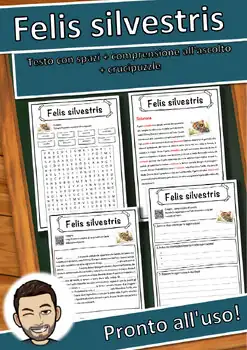
Felis silvestris – Italian Reading: Cloze, Listening & Word Search
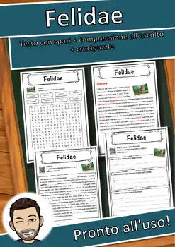
Felidae – Italian Reading: Cloze Text, Listening Task & Word Search (Scheda)
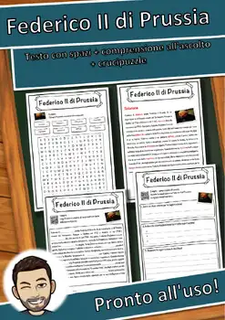
Federico II di Prussia – Italian Reading: Cloze, Listening & Word Search
Minnesota – Worksheet: cloze text, listening comprehension and word search
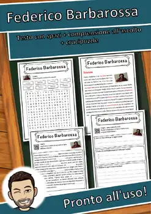
Federico Barbarossa – Italian Reading: Cloze, Listening & Word Search

Feci – Italian Reading: Cloze Text, Listening Task & Word Search (Scheda)
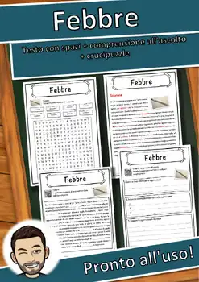
Febbre – Italian Reading: Cloze Text, Listening Task & Word Search (Scheda)

Fax – Italian Reading: Cloze Text, Listening Task & Word Search (Scheda)
Favola – Italian Reading: Cloze Text, Listening Task & Word Search (Scheda)
No resources found – try a different search term or filter.